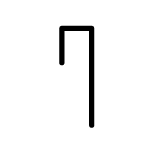
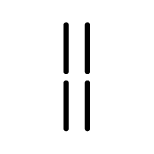
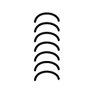

Sign
M87
Appears in 232 texts (365 uses), mostly on seals at Mohenjo-daro; usually sits inside a text. In the larger ICIT corpus its Wells equivalent W032 is in 339 texts, including at Dholavira.
Project finding: M403 is followed by M87 about half the time: a fixed pair Held up
Where it appears 232
Counts are distinct texts in the Mahadevan 1977 concordance (a text repeated on many moulded tablets counts once). 349 objects in all carry it.
| Object | Texts | Share |
|---|---|---|
| Seal | 168 | 72% |
| Sealing | 28 | 12% |
| Tablet | 15 | 6% |
| Copper tablet | 10 | 4% |
| Pottery | 8 | 3% |
| Other | 3 | 1% |
| Site | Texts | Share |
|---|---|---|
| Mohenjo-daro | 139 | 60% |
| Harappa | 61 | 26% |
| Chanhu-daro | 13 | 6% |
| Lothal | 10 | 4% |
| Kalibangan | 6 | 3% |
| Other sites | 3 | 1% |
| Where | Uses | Share |
|---|---|---|
| First sign | 57 | 23% |
| Inside | 170 | 69% |
| Last sign | 18 | 7% |
| Whole text | 1 | 0% |
Position counts use only texts with no damaged passage (246 uses).
In the ICIT corpus (Wells numbering)
W032: 339 distinct texts, 588 uses.
By object: seals 200, tablets 77, pottery 23, sealings 19, copper tablets 12, other objects 8. Top sites: Mohenjo-daro 151, Harappa 119, Chanhu-daro 15, Dholavira 15, Lothal 14, Kalibangan 8.
Variants
Wells (ICIT) equivalent: W032.
Probably the same sign (looks alike and is used alike):

M127drawing similarity 0.69, context similarity 0.84
Pairs from the prior project’s allograph model (image × distribution, signs with at least 8 uses).
Merged with other signs in alternative sign lists (used to test whether findings survive):
- All proposed merges
 M86
M86 - Merged by drawing (fine)

M105 - Merged by drawing (medium) M105
- Merged by drawing (coarse) M105

M315
Neighbours and fixed pairs 3
Comes after
Signs read directly before or after it, counted in distinct texts, never across a line break or damage.
Fixed pairs
- M87
 M6013 texts. M87 is followed by M60 6% of the time; M60 follows M87 54% of the time.
M6013 texts. M87 is followed by M60 6% of the time; M60 follows M87 54% of the time. - M87
 M28410 texts. M87 is followed by M284 4% of the time; M284 follows M87 67% of the time.
M28410 texts. M87 is followed by M284 4% of the time; M284 follows M87 67% of the time.
At least 5 texts, and one sign takes the other at least half the time.
Fixed sequences in the functional reading
Published readings 7
- Wells · 2015Not tested on its own
10 (units of volume on pots; ~9.24 L per stroke on Purana Qila vessels)
Wells 2015 The Archaeology and Epigraphy of Indus Writing, ch.4-5 (Archaeopress)
- Mukhopadhyay · 2019Not tested on its own
metrological notation (licence fee / quantity)
- Fuls · 2024Not tested on its own
zu
Fuls 2024 IJAS 14(1):3-16 Fig.9 (values: Desset et al. 2022); Fuls says the scripts are NOT directly related
A Linear Elamite sign that looks like this one, with its Linear Elamite sound value. Fuls lists look-alikes; he does not claim the Indus sign has this value.
- Parpola · 1994, 2010Underpowered
M87 = vel (spear/god); fills the same slot as fish (M-172 vs H-6)
Parpola 2010 Coimbatore lecture pp. 27-29 (experiments/news_read/raw/parpola-1994) · test record
Tested later (Parpola rules 3 and 4): the method found too few planted stand-ins to decide either way.
- Parpola · 1994, 2010Partly holds
fixed names of the god Murukan
Parpola 2010 pp. 23-29 · test record
Tested later (Parpola rules 3 and 4): M403 is followed by M87 far more than chance; the squirrel never follows M403. A fixed pair, not a reading.
- Laursen · 2010Testable, not yet run
a prefix common on Gulf-type seals; part of a non-Harappan (Dilmun) language or name formula
pp. 117-118 (abstract only read) · test record
Round Gulf seals breaking order is README #4. The twins prefix itself is untested. Our foreign corpus has 46 legible texts; only 3 contain W032 in our transcription, so the sign mapping must be checked first.
Yajnadevam’s sound value
- Yajnadevam · 2024Did not hold
s
Yajnadevam 2024 ‘A cryptanalytic decipherment of the Indus script’; per-sign key from yajnadevam/lipi xlits.csv via sources/field-cady_indus_valley_script_corpus/xlits.csv · test record
Part of a 714-value sound key that scores no better than keys fitted to noise (atlas 1.1).
From proposals.json and CATALOGUE.csv. A claim is listed under every sign it names.
Project tests 22
Established results
- M403 is followed by M87 about half the time: a fixed pairHeld up
Holds on held-out texts and at post-1977 sites. It is a fixed pair, not a reading; the red team labels it fragile.
- Whether M87 stands in for the fish M59 cannot be tested at this corpus sizeCan’t test yet
The method found 2% of planted stand-ins; M87 sits next to the fish rather than in its slot.
Role in the text
- Positional class
- Unclassified. Its raw label was numeral, but it did not keep that label reliably. Grammar
- Functional reading
- NUMERAL(tall) 1.00. Tall-stroke numeral 2. tall strokes count M328/M211/M60 only (F2/F8); side-2 docket formula (F15); values 2-3 favoured Functional reading
Role names such as opener or noun are labels for positions, not tested meanings.
Mentioned in 20 result files
- Parpola rules 3 and 4: vēl as a fish stand-in, and Murukan’s fixed partners15 lines. “Rule 3 (M87 substitutes for fish M59): underpowered.”
- Novel methods from other fields: results10 lines. “…racket looks like a modifier that moves a sign into the closer slot, often after two tall strokes (“M87 M60”). It does not create an unrelated sign. Enclosure of non-fish signs shows no such shift (0.…”
- Meaning claims from culture, archaeology and history4 lines. “M87 substitutes for M59 (Parpola’s vēl). L1.”
- Functional reading: a role grammar that “reads” every Indus text without phonetics3 lines. “…)] [TITLE-BLOCK: M51+M130+M149] [CLOSER: jar M342] [DOC-TYPE CLITIC: M176]. Side 2: [COUNT+MEASURE: M87 (tall 2) + M328]. *Reading:* “12 · title block · closing word · tablet clitic // 2 units.” This…”
- Literature map: Indus script research, with emphasis on 2015-20263 lines. “tall strokes (M87) 65”
- Red team: do ticked fish really cluster by block at Mohenjo-daro?3 lines. “Texts: M152 M99 M53 M59 M87 M60, M87 M59 M71, M258 M342 M87 M60 M87 M272, M100 M17 M60.”
- Structure of the Indus texts: direction, inventory, positional classes, segmentation, grammar3 lines. “Medial core 70 4,271 0.15 / 0.79 / 0.06 M99, M59, M87, M67, M162, M336, M123, M65, M343, M89 W002, W032, W220, W240, W060, W033, W741”
- Copper tablets: calendar series, tallies or amulets?2 lines. “T06 8/10/10 goat-antelope, twirled horns M70 M112 M194 M18 M211 M87 M169 horned-U x9”
- Stratigraphic half-life: do name signs turn over faster than frame signs? (Fable plan 2, item 9)2 lines. “…sign x dataset tests reaches q < 0.05 (best: Lothal connective M99, p = 0.0024, q = 0.46; MD tall-2 M87 later, p = 0.004, q = 0.46). Power is the limit: a sign seen *only* in one period needs about 4-…”
- A positional grammar of the Indus seal text2 lines. “unclassified 265 0.363 M87 (191, 0.75), M176 (153, 0.70), M162 (140, 0.61), M89 (134, 0.55), M169 (111, 0.56), M86 (92, 0.53), M171 (85, 0.47), M1 (80, 0.70), M102 (77, 0.62), M17 (55, 0.41) ...”
- Administrative archaeology: relational readings without sounds1 line. “…ation is at null. No “son-of” sign can be identified: second lines start with tall-stroke numerals (M87, M89) and M197, not with any constant marker. The dev excess of one-line “compounds” (two comple…”
- Consensus corpus: the nine headline tests at the real transcription error rate1 line. “missing/extra M87 - 3 1.2% 17.2%”
- Internal phonetics: does Indus spelling variation leak sound values?1 line. “After the opener+connective: M387, M389, M67, M65, M102, M86, M87 after M99. M267 and M391 before M99.”
- Grammar of the Indus number signs (Fable 5.2 plan 3, R1: the Proto-Elamite method)1 line. “tall M86 (1), M87 (2), M88/89/92/93/94 (3), M95 (4), M96 (5) 133 / 248 / 182 / 9 / 16”
- Phonetic grid (automated Kober triplets + Ventris grid)1 line. “M59 0.11 / 0.88 / 0.02 3.8% (3.4%) 2 / 45 19 (6.0, z +2.4) 3.9 / 5.1 M87 43, M171 30”
- Potter’s marks and the frame signs (Fable 5.2 plan 2, item 7)1 line. “M87 M99: 2 jars, 3 bowls.”
- Red team: the shape-only merge list (board #40, attacks #36 / experiments/signlist_shape)1 line. “The numeral rule removed 8 merges: M105+M87, M116+M118, M114+M189, M107+M109, M246+M96, M109+M239, M154+M86, M88+M95. The gain went up slightly. The numeral merges were costing likelihood.”
- Red team of #30: ticked fish close the text (README #3), complete single-line texts1 line. “B2 one ticked text per final bigram (drops 2452 = 2171 M87 M59 M71) 392 8/15 3/143 0.015 0.001 0.018”
- Sign list from shape plus context: 400 or 700 signs?1 line. “numerals of different value (M105 + M87; M108 + M110; M116 + M118);”
- One-to-many substitution (X YZ): does a single sign ever trade places with a 2-3 sign spelling?1 line. “M87 = M53 M171 4 0.09 0.001 2429 \ \ 1429 core sign ↔ lexicalised pair; held-out k=2, q=0.004”
Example texts 3
Text 1008 · Mohenjo-daro · seal · M76 M402 M87 M59 M67 M336 M89 M211


Text 1560 · Mohenjo-daro · sealing · M336 M89 M87 M373


Text 1714 · Mohenjo-daro · copper tablet · M87 M155 M169
Signs in reading order, first sign on the left. Text numbers are Mahadevan’s (1977). / marks a line break, … a damaged passage.